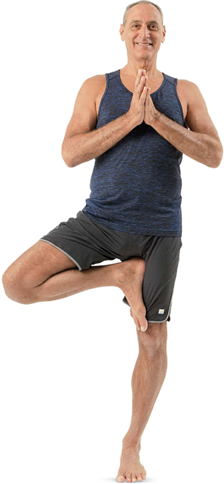
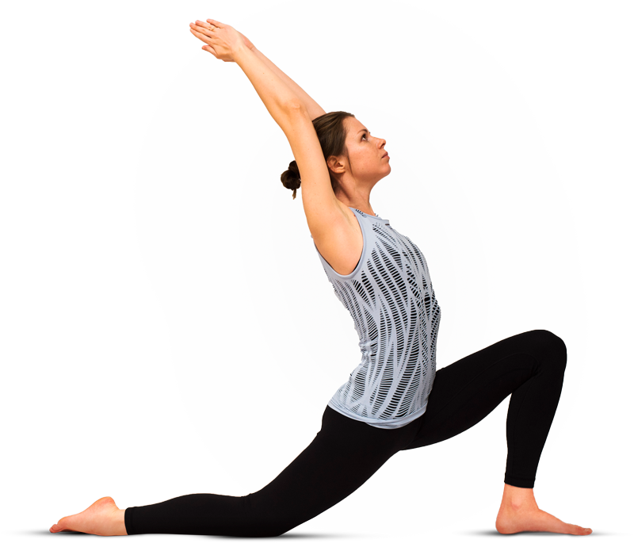
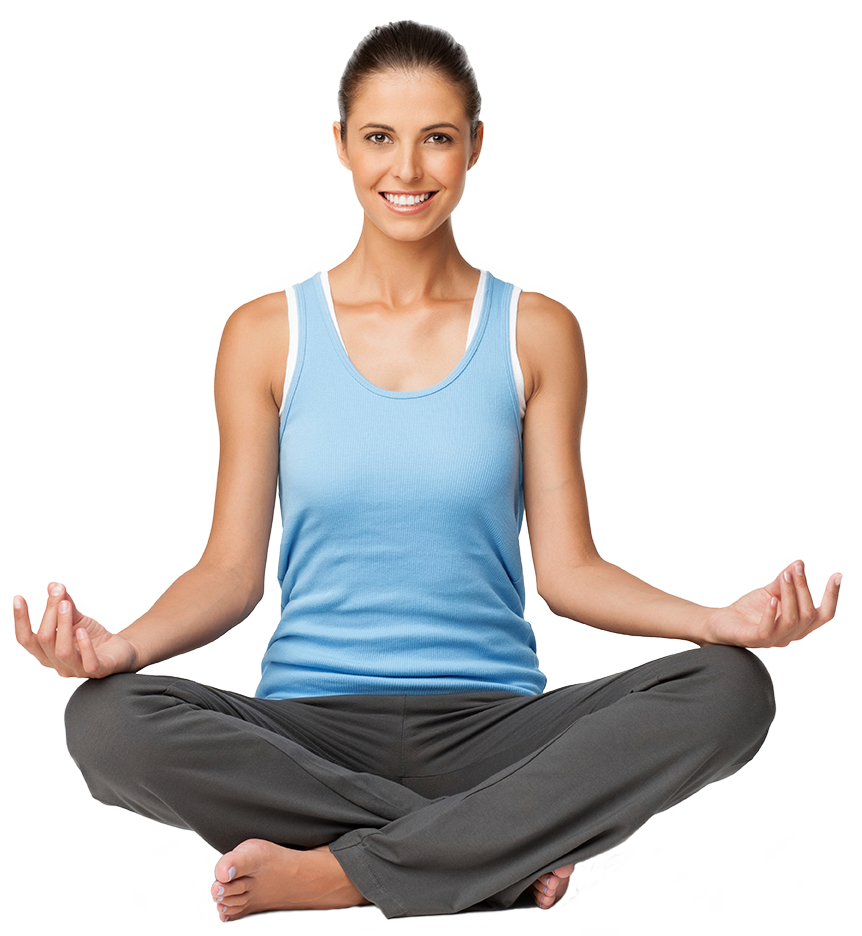
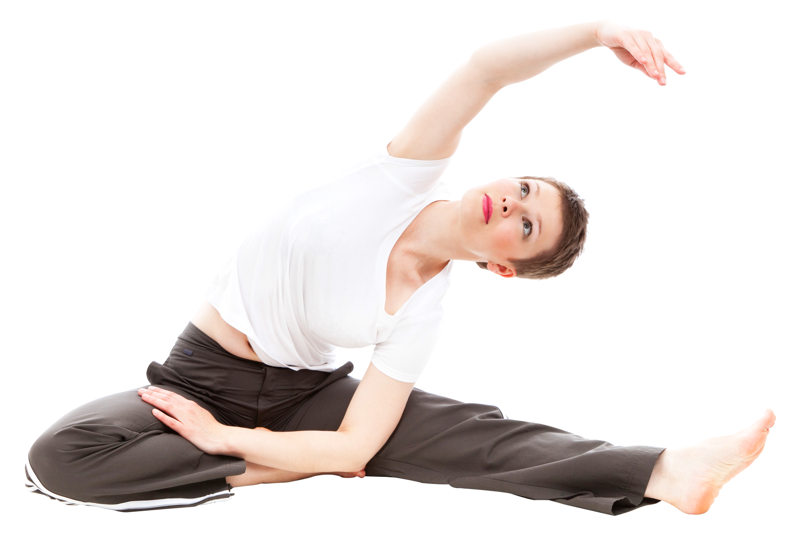
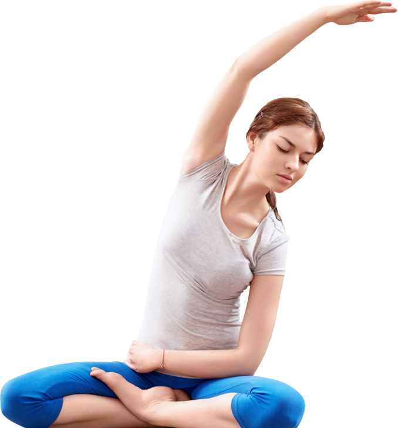
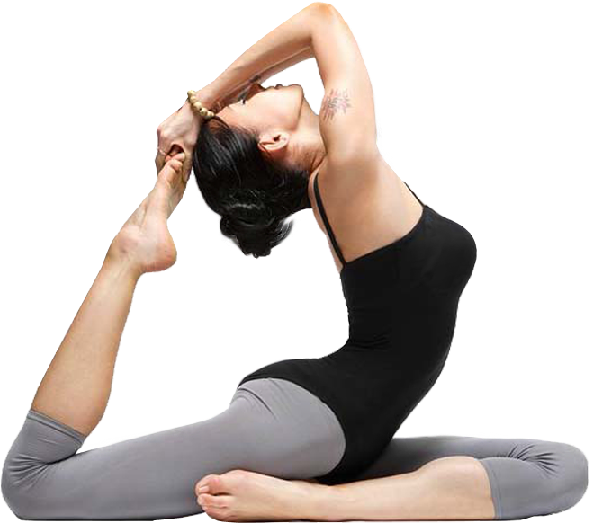

<section class="section teacher-section page">
	<div class="inner">
		<div class="container">
			<div class="menu">
				<button class="menu__wrapper">
					<div class="menu__burger">
						<div></div>
						<div></div>
						<div></div>
					</div>
					<div class="menu__text">
						Меню
					</div>
				</button>
			</div>
			<div class="section-title">
				<div class="section-title__inner">
					Преподаватели
				</div>

			</div>
			<div class="phone">
				<a href="tel:+7 (812) 345-56-97">+7 (812) 345-56-97</a>
			</div>
			<div class="lotos-logo">
				
				<div class="tabs teacher__tabs">
					<ul>
						<li class="teacher__tab teacher__tab--active tab tab--active"><a href="#">Максим Казаков</a></li>
						<li class="teacher__tab tab"><a href="#">Юлия Зырянова</a></li>
						<li class="teacher__tab tab"><a href="#">Настя Антипова</a></li>
						<li class="teacher__tab tab"><a href="#">Ольга Ветрова</a></li>
						<li class="teacher__tab tab"><a href="#">Катя Стреженова</a></li>
						<li class="teacher__tab tab"><a href="#">Мария Жукова</a></li>
					</ul>
				</div>
			</div>
			<div class="girl">
				<ul class="girl-tabs">
					<li class="girl-tab img-tab--active img-tab">
						
					</li>
					<li class="girl-tab img-tab">
						
					</li>
					<li class="girl-tab img-tab">
						
					</li>
					<li class="girl-tab img-tab">
						
					</li>
					<li class="girl-tab img-tab">
						
					</li>
					<li class="girl-tab img-tab">
						
					</li>
				</ul>
			</div>
			<div class="central-text">
				<ul>
					<li class="tab-item teacher__tab-item tab-item--active">
						<div class="central-text__name">Максим Казаков</div>
						<div class="central-text__experience">Преподаватель йоги с 1997 года</div>
						<p class="central-text__about">Занимается йогой Айенгара с 1990 года. Является преподавателем йоги Айенгара
							с
							1997
							года. Имеет международный сертификат Junior I. Проводит семинары, занятия разных уровней сложностей.</p>
						<p class="central-text__about">В йогу привел интерес. Является одним из самых опытных преподавателей и
							опорой
							нашего центра. Все студенты любят Максима за отзывчивость
							и индивидуальный подход к каждому.</p>
					</li>
					<li class="tab-item teacher__tab-item">
						<div class="central-text__name">Юлия Зырянова</div>
						<div class="central-text__experience">Преподаватель йоги с 1998 года</div>
						<p class="central-text__about">
							8 лет занималась танцами в спортивно-эстрадном ансамбле.
							Затем увлекалась восточными единоборствами. Стала посещать разные направления йоги.
							Преподавала хатха-йогу, акро-йогу как для коллектива, так и частно. Нашла себя в коллективе файер-шоу, где
							помимо искусства огня обучали парной акробатике и элементам акро-йоги.
						</p>
						<p class="central-text__about">
							Считаю Аштанга Виньяса идеальным занятием для людей, которые хотят совместить активность и релакс, что на
							первый
							взгляд не легко, но как только Вы попробуете, поймёте, что это более чем возможно.
						</p>
					</li>
					<li class="tab-item teacher__tab-item">
						<div class="central-text__name">Настя Антипова</div>
						<div class="central-text__experience">Преподаватель йоги с 2018 года</div>
						<p class="central-text__about">Студентка филиала института йоги Карлоса Кларамунта, Барселона, Испания.
							Преподаватель хатха-йоги, нидра-йоги. Чайный страж и участница всевозможных ретритов. Йога для меня –
							образ жизни более пяти лет. Исследователь здорового питания.</p>
						<p class="central-text__about">Лично для меня нет асан простых или сложных, трудных или лёгких…
							Каждая должна выполняться со 100%-й долей осознанности — это самый главный фактор во время отстройки
							асаны.</p>
					</li>
					<li class="tab-item teacher__tab-item">
						<div class="central-text__name">Ольга Ветрова</div>
						<div class="central-text__experience">Преподаватель йоги с 2015 года</div>

						<p class="central-text__about">Лет 5 назад я в первый раз пришла на занятие по йоге. Я чувствовала себя
							полной “буратиной”, смотрела на инструктора, на людей вокруг и не понимала КАК МОЖНО ЭТО ДЕЛАТЬ???
							Сейчас я инструктор. Сказать, что практика изменила мою жизнь — это ничего не сказать. В моей жизни
							изменилось всё.</p>
						<p class="central-text__about">
							Как инструктор цель своих занятий вижу в том, чтобы как можно больше людей познакомились с йогой, поняли
							как она работает и прочувствовали результаты на себе. Чтобы как можно больше людей имели возможность,
							также как и я, улучшить качество своей жизни.

						</p>
					</li>
					<li class="tab-item teacher__tab-item">
						<div class="central-text__name">Катя Стреженова</div>
						<div class="central-text__experience">Преподаватель йоги с 2007 года</div>
						<p class="central-text__about">У каждого свой путь в йогу, свои цели и ожидания от практики. Меня в йогу привела старшая сестра, попросив составить ей компанию. Вернее, я думаю, она ускорила мой приход в студию. И я очень благодарна ей за это! После первого же занятия не было сомнений, что я приду сюда снова.</p>
						<p class="central-text__about">Так йога начала постепенно завоёвывать мое сердце, входить в мою жизнь. Мне нравились изменения и ощущения в теле. Позже возникло желание и необходимость в самостоятельной практике. Закончила курсы для инструкторов В. Малиновской по направлению Баланс-йога, являюсь сертифицированным преподавателем.
						</p>
					</li>
					<li class="tab-item teacher__tab-item">
						<div class="central-text__name">Мария Жукова</div>
						<div class="central-text__experience">Преподаватель йоги с 2016 года</div>
						<p class="central-text__about">Инструктор по йоге для беременных, врач-гинеколог и счастливая мама.</p>
						<p class="central-text__about">
							Очень рада быть инструктором йоги для женщин, которые находятся в самом сокровенном периоде своей жизни —
							беременности. Ведь совсем скоро Кроха появится в этом Мире, и ему очень нужна здоровая и гармоничная мама,
							полная сил и энергии. И это то, что Вы сможете получить на занятиях в нашей студии.</p>
					</li>
				</ul>
				<button class="central-text__button">
					<div class="central-text__circle"></div>
					<div class="central-text__button-text">Записаться к тренеру</div>
				</button>
			</div>
			<div class="number-page">
				<div class="number-page__this">04</div>
				<div class="number-page__all">-08</div>
			</div>
			<div class="social">
				<ul>
					<li><a href="#">vk</a></li>
					<li><a href="#">fb</a></li>
					<li><a href="#">inst</a></li>
				</ul>
			</div>
			<div class="next-page">
				<a class="next-page__text" href="#" id="b-navkey__next">Абонементы<div class="next-page__button">
						<svg version="1.1" width="6px" height="6px" xmlns="http://www.w3.org/2000/svg"
							xmlns:xlink="http://www.w3.org/1999/xlink" xml:space="preserve" viewBox="0 0 100 100"
							preserveAspectRatio="none">

							<polygon fill="#fff" points="0,100 50,0 100,100" />
						</svg>
					</div></a>
			</div>
		</div>
	</div>
</section>